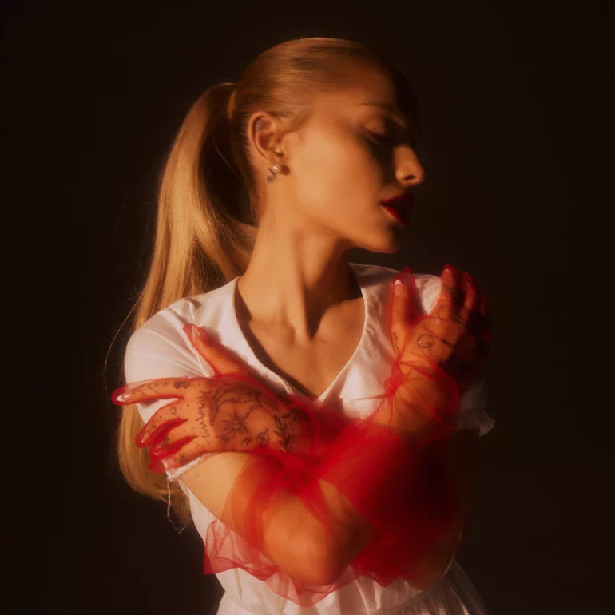

Bruno Mars
412,345,678
播放次数
112,345,678
听众
21,234,567
收藏者
Peter Gene Hernandez，1985年10月8日出生于美国夏威夷檀香山，艺名Bruno Mars， 是美国创作歌手、音乐制作人、舞蹈演员。他以融合流行、R&B、放克和灵魂乐的独特风格闻名， 被誉为当代最全能的音乐人之一。Bruno Mars获得过15项格莱美奖、11项公告牌音乐奖和3项全美音乐奖。 他与Mark Ronson合作的《Uptown Funk》是21世纪最畅销的单曲之一， 专辑《24K Magic》和《Doo-Wops & Hooligans》都是全球畅销专辑。
热门歌曲
-
1Uptown Funk (with Mark Ronson)587,654,321
-
2Just the Way You Are512,345,678
-
3That's What I Like489,012,345
-
4Grenade456,789,012
-
524K Magic423,456,789
专辑
24K Magic
2016 • Album
Doo-Wops & Hooligans
2010 • Album
Unorthodox Jukebox
2012 • Album
An Evening with Silk Sonic
2021 • Album
相似艺术家
Gracie Abrams
Jungkook
Adele

Ariana Grande
Olivia Rodrigo